Lecture 13
CT System Analysis and Design using Laplace
2026-02-25
Today we look at three important applications of Laplace for the analysis, design, and implementation of CT systems.
Analyzing Electrical Circuits
Recall from ECE 2714 that we can analyze electrical circuits that form LTI systems by
Deriving a governing equation (LCDE)
Finding the impulse response \(h(t)\)
Using convolution to determine the output \(y(t)\) given an input \(x(t)\)
Or alternatively using Fourier analysis
Determine stability and derive the frequency response \(H(j \omega)\)
use convolution theorem to find output \(Y(j\omega)\) and use the inverse Fourier transform to find \(y(t)\).
Now that we have Laplace as a tool we can simplify this process further. The idea is to go back to circuits and take the Laplace transform of each element’s voltage-current model. Voltages and currents become expressed in the Laplace domain. The voltage-current relationship then becomes a linear function, with the generalized version of resistance, impedance, and the generalized version of inverse resistance, admittance.
Resistor
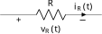
\[\begin{align*} v_R(t) &= R\, i_R(t)\\ V_R(s) &= R\, I_R(s) \end{align*}\] Impedance \(R\), Admittance \(\frac{1}{R}\)Capacitor
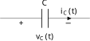
\[\begin{align*} i_C(t) &= C\, \frac{dv_c}{dt}(t)\\ I_C(s) &= C\left[sV_C(s) - v_c(0^-) \right]\\ I_C(s) &= CsV_C(s) - Cv_c(0^-) \end{align*}\] or rearranging \[V_C(s) = \frac{1}{Cs}I_C(s) + \frac{v_C(0^-)}{s}\] Impedance \(\frac{1}{Cs}\), Admittance \(Cs\)Inductor
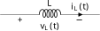
\[\begin{align*} v_L(t) &= L\, \frac{di_L}{dt}(t)\\ V_L(s) &= L\left[sI_L(s) - i_L(0^-) \right]\\ V_L(s) &= LsI_L(s) - Li_L(0^-) \end{align*}\] or rearranging \[I_L(s) = \frac{1}{Ls}V_L(s) + \frac{i_L(0^-)}{s}\] Impedance \(Ls\), Admittance \(\frac{1}{Ls}\)
This gives us new circuit models in Laplace domain with either constant voltage or current sources representing the terms containing auxiliary conditions at \(t=0^-\). Using KVL and KCL with these models gives us a convenient way to go from a circuit directly to a transfer function. Most upper level circuit courses will use these techniques. e.g. AC-circuits.
Capacitor Model
Using the above relationships for capacitor voltage and current after using the Laplace transform, we get two equivalent circuit models. Which one to use depends on the analysis being employed (KVL or KCL) and whether the initial capacitor voltage is zero.
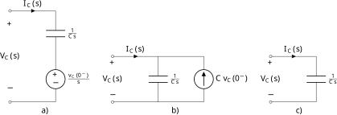
Inductor Model
Using the above relationships for inductor voltage and current after using the Laplace transform, we get two equivalent circuit models. Which one to use depends on the analysis being employed (KVL or KCL) and whether the initial inductor current is zero.
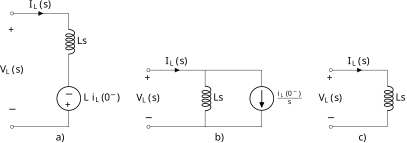
Example 1
Consider the familiar series RC circuit in the figure below where the input voltage \(x(t)\) and output voltage \(y(t)\) are indicated. However now there is a non-zero initial capacitor voltage, \(v_C(0^-) = V_0\). On the left we have the original circuit in the time-domain and on the right the transformed circuit in the Laplace domain. Since I plan to use a KCL analysis I choose the transformation that suits that approach best.
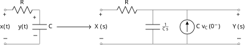
Using a KCL:
\[\frac{X(s) - Y(s)}{R} + C v_C(0^-) = \frac{Y(s)}{\frac{1}{Cs}} = Cs\,Y(s)\]
Rearranging and substituting for \(v_C(0^-)\) we get
\[(1 + RCs)Y(s) = X(s) + RCV_0\]
and
\[Y(s) = \frac{1}{1+RCs} X(s) + \frac{RCV_0}{1+RCS}\]
If \(V_0 = 0\) then \(Y(s) = \frac{1}{1+RCs} X(s)\) and the transfer function is \(H(s) = \frac{Y(s)}{X(s)} = \frac{1}{1+RCS}\).
Example 2
Consider the series RLC with zero initial conditions for the inductor current and capacitor voltage.
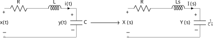
Using a KVL around the loop gives:
\[\begin{align*} X(s) &= RI(s) + LS I(s) + \frac{1}{Cs} I(s) \\ Cs X(s) &= RCsI(s) + CLs^2I(s) + I(s) \\ Cs X(s) &= (RCs + CLs^2 + 1)\cdot I(s)\\ I(s) &= \frac{Cs}{CLs^2 + RCs + 1}\cdot X(s) \end{align*}\]
The output is then
\[Y(s) = \frac{1}{Cs} I(s) = \frac{1}{CLs^2 + RCs + 1}\cdot X(s)\]
and the transfer function is
\[H(s) = \frac{Y(s)}{X(s)} = \frac{1}{CLs^2 + RCs + 1}\]
Example 3
This works with active (op-amp) circuits as well. Consider a second order circuit using the Sallen-Key topology.
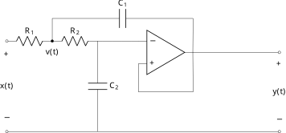
If we assume the system is a rest when the input is applied, the initial capacitor voltages are zero and we can transform the circuit into the Laplace domain.
Doing a KCL at node \(V\):
\[\frac{X(s) - V(s)}{R_1} + \frac{Y(s) -V(s)}{\frac{1}{C_1s}} = \frac{V(s) - Y(s)}{R_2}\]
Doing a KCL at the non-inverting input of the op-amp:
\[\frac{V(s) - Y(s)}{R_2} = \frac{Y(s)}{\frac{1}{C_2 s}}\]
Given these two algebraic equations in \(X\), \(Y\), and \(V\) one can eleminate the the node voltage \(V\) and arrive at the transfer function. This is left as "an exercise for the reader".
Analyzing Block Diagrams
Recall from ECE 2714 that block diagrams can be used to model systems and implement/realize systems.
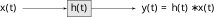
\(\Longrightarrow\)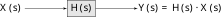
series connection, the overall transfer function \(H(s) = H_1(s)\cdot H_2(s)\)
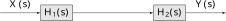
Transformation of input and output to Laplace domain for a series connection. parallel connection, the overall transfer function \(H(s) = H_1(s)+ H_2(s)\)
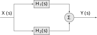
Transformation of input and output to Laplace domain for a parallel connection. feedback connection, the overall transfer function \(H(s) = \frac{H_1(s)}{1+ H_1(s)\cdot H_2(s)}\)
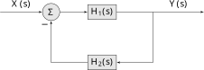
Transformation of input and output to Laplace domain for a feedback connection. Note this is much easier than in the time domain.
We can use block diagrams to derive an overall transfer function from sub-components. To illustrate this consider three examples.
Example 4: PID Controller
The proportional-integral-derivative (PID) controller is the prototypical system in control theory and used extensively in applications. It can be described by the following block diagram:
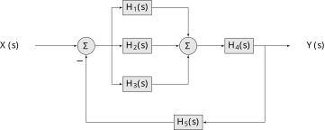
where
\(H_1(s) = K_1\) for \(K_1\in\mathbb{R}\), is the proportional part of the controller;
\(H_2(s) = K_2\cdot s\) for \(K_2\in\mathbb{R}\) is the derivative part of the controller;
\(H_3(s) = \frac{K_3}{s}\) for \(K_3\in\mathbb{R}\) is the integral part of the controller;
\(H_4(s)\) is the transfer function that corresponds to the system being controlled, traditionally called the plant;
\(H_4(s)\) is the transfer function for the measurement part of the system.
The PID controller is made up of the three parallel blocks, \(H_1\), \(H_2\), and \(H_3\). It filters, or processes the difference in the input and the output after measurement, called the error, \(X(s) - H_5(s)\cdot Y(s)\). The output of the controller is input to the system being controlled, \(H_4\), calle dthe control variable, and its output, \(Y(s)\), is the signal we are interested in controlling.
We can derive an overall transfer function for the controlled system using the rules for simplifying block diagrams. We might approach this as follows.
1. The controller itself consists of three parallel blocks. This can be replaced by a single block whose transfer function is the sum of the three:
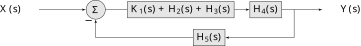
2. The simplified controller and the plant are is series, thus thier combination can be replaced by their product:
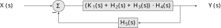
3. Now we apply the feedback motif to arrive at the overall transfer function:
\[H(s) = \frac{\left(K_1(s) + H_2(s) + H_3(s)\right)\cdot H_4(s)}{1 + \left(K_1(s) + H_2(s) + H_3(s)\right)\cdot H_4(s) \cdot H_5(s)}\]
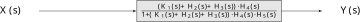
After substituting for the PID block transfer functions and simplifying we arrive at:
\[H(s) = \frac{\left(K_2 s^2 + K_1 s + K_3\right)\cdot H_4(s)}{\left(K_2 s^2 + K_1 s + K_3\right)\cdot H_4(s)\cdot H_5(s) + s}\]
Choosing the best values for \(K_1\), \(K_2\), and \(K_3\) (and defining what best means) is called "tuning" the controller. This depends on the plant transfer function \(H_4(s)\) and the feedback transfer function \(H_5(s)\), and is part of the control system design process. This process also takes into account measures of system stability as well as the rise and settling time of the output due to a step input.
Example 5: DC Motor Model
A DC motor converts an input voltage, \(v_a(t)\), to a current, \(i_a(t)\), through the windings, generating a torque on the motor shaft. An external torque and shaft mechanical dynamics give rise to rotational motion, i.e. a rotational velocity, \(\omega\), and it’s integral, rotational position, \(\alpha\). This can be approximated by the linear system with block diagram:
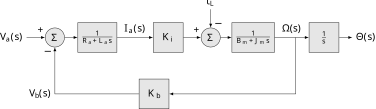
where
\(R_a\) and \(L_a\) are the armature resistance and inductance
\(K_i\) is the torque gain
\(K_b\) is the back EMF gain
\(J_m\) and \(B_m\) are the rotor inertia and it’s viscous friction coefficient
We will assume the load tourque is zero (to make this a single input system). Then using the rules for simplifying the block diagram we combine the three series blocks modeling the armature, current-to-tourque, and mechanical inertia and bearing friction. Then we use the feedback motif to combine the forward model and back EMF model. This is then combined in series with the rotational velocity to position integrator block to define the overall transfer function from input armature voltage to output shaft angle.
\[\begin{align*} H(s) &= \frac{\Theta(s)}{V_a(s)} = \frac{\frac{K_i}{\left(R_a + L_a s\right)\cdot \left( B_m + J_m s\right)}}{s \cdot \left[1+\frac{K_i\cdot K_b}{\left(R_a + L_a s\right)\cdot \left( B_m + J_m s\right)}\right]}\\ &= \frac{K_i}{L_a J_m s^3 + (R_aJ_M + L_a B_m)s^2 + (R_aB_m + K_iK_b)s} \end{align*}\]
Determining the values for model paramters \(R_a\), \(L_a\), \(K_i\), \(K_b\), \(B_m\), and \(J_m\) is a system identification problem. This is typically accomplished using a calibration step that collects data and uses a learning algorithm to adjust the parameters to fit the data.
Example 6: DC Servo
A servo-motor, or just "servo", is a electro-mechanical device whose input is a desired angle for a rotary shaft as an electrical signal and whose output is actual angle of the rotary shaft. We can build a linear system model for a DC servo using the previous two examples in combination.
Let the plant transfer function \(H_4(s)\) from Example 4 be given by that of the DC motor in Example 5. That is the output of the PID block is the armature voltage to be applied to the motor, and the output is the rotation angle of the motor shaft. For simplicity assume the feedback transfer function has no gain or dynamics, so that \(H_5(s) = 1\) (the angle is measured exactly and instantaneously). Essentially the system measures the error between the desired and actual angle, filters the error signal through the PID block, and applies that output as the armature voltage.
To arrive at the mathematical model, we can substitute the plant transfer function by that of the DC motor and simplify. This gives us the overall transfer function for the servo:
\[H(s) = \frac{X(s)}{\Theta(s)} = \frac{K_i K_2 s^2 + K_i K_1 s + K_i K_3}{L_a J_m s^4 + (R_aJ_m + L_a B_m) s^3 + \left[(R_a B_m + K_i K_b) + K_i K_2 \right] s^2 + K_i K_1 s + K_i K_3}\]
where \(X\) is the desired input angle and \(\Theta\) is the actual angle. While this might look complicated, most the terms are constants. You should now be able to recognize it as a fourth-order system with two zeros and four poles, whose locations depend on both the DC motor parameters, which are typically fixed, and the PID parameter settings, which can be adjusted to ensure stability and maximize performance.
System Realization
We can also use block diagrams in the opposite way, to implement, or realize, a given transfer function (for example from a filter design) using three basic building blocks: summation, amplifier (gain), and integrator.
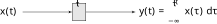
\(\Longrightarrow\)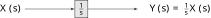
The realization is not unique, with different canonical forms, each with advantages and disadvantages (e.g. reduced number of components and reduced sensitivity to component variation).
Direct Forms for Realization
It is best to use an example by way of explaining system realization. The extension to the general case is then easier to see.
Given a transfer function
\[H(s) = \frac{s+a}{s^2 + bs + c} = \frac{Y(s)}{X(s)}\] for constants \(a,b,c\in\mathbb{R}\), we wish to implement the corresponding system in terms of summations, amplifiers, and integrators.
We first use the definition of the transfer function to write the input output relationship in the Laplace domain as
\[Y(s)\left(s^2 + bs + c\right) = \left(s+a\right) X(s)\]
Next, we distribute the input and output sigals over the polynomials
\[s^2 Y(s) + bsY(s) + cY(s) = sX(s) + aX(s)\] Then we divide through by \(s^2\) to put each term in the form of a integrator
\[Y(s) + \frac{b}{s}Y(s) + \frac{c}{s^2}Y(s) = \frac{1}{s} X(s) + \frac{a}{s^2} X(s)\]
And solve for \(Y(s)\)
\[Y(s) = -\frac{b}{s}Y(s) - \frac{c}{s^2}Y(s) + \frac{1}{s} X(s) + \frac{a}{s^2} X(s)\]
We can then translate that directly to a block diagram
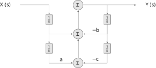
The above is called the Direct Form I implementation/realization of the system. The major drawback of this form is that it requires four integrators to implement a second order system. Out intuition is that we should just need two. To see how to do this we note we can split the above block diagram into two stages in series by splitting the top summation and labeling the intervening signal as \(W(s)\):
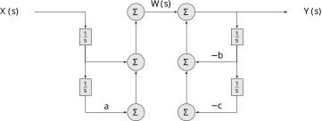
The first stage corresponds to the transfer function \(H_1(s) = \frac{W(s)}{X(s)}\), while the second stage corresponds to the transfer function \(H_2(s) = \frac{Y(s)}{W(s)}\), and the overall transfer function is \(H(s) = H_1(s) \cdot H_2(s)\).
Recall from 2714 and the commutivity of multiplication that the order of two series connections does not affect the overall system. Thus if we reverse the two stages, i.e. \(H(s) = H_2(s) \cdot H_1(s)\), we get the block diagram
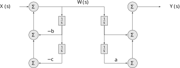
Now we note that the signal \(W(s)\) is duplicated through two identical paths with two integrators in series, giving duplicate outputs. This redundancy can be removed if we combine the integrators. This gives what is called the Direct Form II realization of the system.
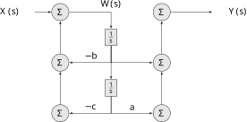
A result from graph theory says that we can reverse the direction of signal flow and interchange the input and output in a block diagram without modifying the overall transfer function. This is called the Transposed Direct Form II realization and looks like
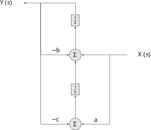
Note the above block diagram can be mirrored left-right to give the normal signal flow of left-to-right. The transposed direct form II typically has the fewest blocks and summation nodes.
There are additional forms, including the Lattice, Parallel, and Cascade of Second-Order Stages (SOS). The Lattice is outside the course scope but the Parallel and SOS are easy to describe.
Parallel Forms for Realization
The parallel form requires real poles for first-order blocks. It can also use second-order blocks for system order greater than three with complex poles. To illustrate, consider a transfer function with real poles, e.g.
\[H(s) = \frac{2}{s^2 + 3s + 2} = \frac{2}{(s+1)(s+2)}\]
If we perform the partial fraction expansion then
\[H(s) = \frac{A}{s+1} + \frac{B}{s+2} = \frac{2}{s+1} + \frac{-2}{s+2}\]
We can then draw this as a parallel connection of two first-order systems
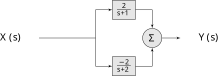
We can then break down each parallel block into a transposed direct form II to arrive at the final parallel realization.
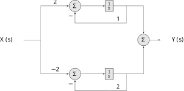
Exercise: Confirm the block diagram for the final parallel realization has an overall transfer function we started with.
Suppose the system was fourth-order with two pairs of complex conjugate poles. Then the partial fraction expansion would be into the sum of two second order terms, and each parallel branch would be a direct-form I/II/transposed form.
Realization via Cascade of Second-Order Stages
The last common realization we will consider is the cascade of second-order stages. Here the transfer function is factored into multiplicative terms of second order (with one first-order stage if the system has odd order). These are then placed in series, with each block typically implemented as a direct-form II, transposed direct-form II, or using a specific circuit toplogy like Sallen-Key.
For example, consider a transfer function
\[H(s) = \frac{25}{s^4 + 8s^3 + 26 s^2 + 40s + 25}\] which has four poles at \((-1 \pm j)\) and \((-1 \pm j2)\). If we group the conjugate poles together then the denominator can be factored into two second order polynomials with real coefficients
\[H(s) = \frac{25}{(s^2 + 4s + 5)(s^2 + 2s + 5)}\]
We can write this as the product of two second-order systems by choosing a factoring of the numerator
\[H(s) = \frac{5}{s^2 + 4s + 5}\cdot \frac{5}{s^2 + 2s + 5} = H_1(s) \cdot H_2(s)\]
This corresponds to a block diagram that is a cascade (series connection) of two second-order stages
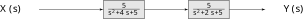
As in the parallel case, each block can be implemented as a prallel or direct form. For example using the direct form II implementation of each block
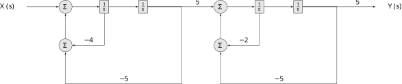